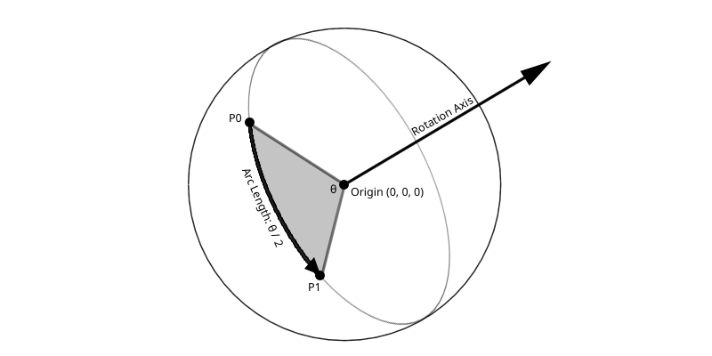

Creating quaternions is not trivial or intuitive at first. To understand why quaternions are created the way they are, it's important to understand how their imaginary components work. The most common way of creating quaternions is from an angle / axis pair.
A rotation about an axis a by amount \(\theta\) can be represented on a sphere as any directed arc of length \(\frac{1}{2}\theta\) in the plane perpendicular to the axis, with positive angles giving a counter-clockwise direction around the axis.
The w component of a quaternion is given by \(cos(\frac{1}{2}\theta)\), or the length of the arc being rotated. The w component is not the angle of rotation, but it is related to the angle of rotation. As the angle of rotation increases, the w component of the quaternion decreases. Consider the following cosines:
In order for w to decreases as \(\theta\) increases, it needs to be mapped to the \(1\) to \(-1\) range. This means the input needs to be in the range of \(cos(0^{\circ})\) and \(cos(180^{\circ})\). Getting the input to that range is simple, since a full rotation is \(cos(360^{\circ})\), simply divide \(\theta\) by 2
The rotation happens on a plane perpendicular to the axis of rotation. The normal of this plane is the (normalized) axis of rotation. The rotation axis needs to be scaled by \(sin(\frac{1}{2}\theta)\). Why scale the axis? To keep the quaternion unit length, this works because \(\sqrt{sin(\theta)^2 + cos(\theta)^2} = 1\), assuming \(\theta\) is the same.
Like with matrices, a positive angle of rotation is a counter clockwise rotation. This might sound like a lot of potentially complicated information, but the code implementation is fairly straight forward:
Quaternion AngleAxis(float degrees, Vec3 axis) {
float radians = degrees * 0.0174533f;
if (MagnitudeSq(axis) != 1) { // Do epsilon check here!
axis = Normalize(axis);
}
Quaternion result;
result.x = axis.x * sinf(radians * 0.5f);
result.y = axis.y * sinf(radians * 0.5f);
result.z = axis.z * sinf(radians * 0.5f);
result.w = cosf(radians * 0.5f);
return result;
}Why \(\frac{\theta}{2}\)? Quaternions track 4\(\pi\) or 720 degrees of rotation. The \(\sin\) and \(cos\) functions have a period of 2\(\pi\) or 360 degrees. Dividing by 2 maps the angle of the quaternion to the period of \(sin\) / \(cos\). A more in-depth explanation is here.
Finding the rotation between two points is best described in [Shoemake 92]. Any two vectors can be considered points on a unit sphere when normalized. The shortest arc between these two vectors lies on a plane that contains both points and the center of the sphere (0, 0, 0). This plane is perpendicular to the rotation axis. The length of the arc is \(\frac{\theta}{2}\) where \(\theta\) is the angle between the two vectors.

This means we have an axis of rotation and some rotation angle, given this information a quaternion is easy to construct. Find the axis of rotation by taking the cross product of the normalized input points, this results in a unit vector perpendicular to both. Find the angle of rotation between two vectors \(\vec{p0}\) and \(\vec{p1}\) can be found like so: \(\theta = \cos^{-1}(\frac{\vec{p0} \cdot \vec{p1}}{\|p0\| \|p1\|})\).
Finding the angle between two vectors is pretty expensive and should be avoided if possible. Luckily, we can use the properties of the dot and cross products here. Since we know that \(\vec{p0}\) and \(\vec{p1}\) are normalized, the angle between them is the same as the arc-cosine of their dot products: \(\theta = cos^{1}(\hat{p0}\cdot\hat{p1})\). For quaternions, we care about the following relationship between the dot and cross products and sin and cos:
This should look familiar, since we can create a quaternion like so:
Comparing the above equations, we can use the dot and cross products to create a quaternion that rotates two times the distance between the given input vectors. The challenge that left is to somehow half that rotation. There are two ways to go about doing this:
I prefer the half-way vector method personally. It's a bit easier to visualize and works very well. That being said, the half-way quaternion method is a little faster. There is one edge case with the half-way vector method, where \(\hat{p0} == -\hat{p1}\), in which case a unique half-way vector doesn't exist. Should this happen, use the shortest basis of \(\hat{p0}\) to find an orthogonal vector.
Quaternion FromToRotation(Vector3 from, Vector3 to) {
Vector3 p0 = Normalize(from);
Vector3 p1 = Normalize(to);
if (p0 == -p1) {
Vector3 mostOrthogonal = Vector3(1, 0, 0);
if (abs(p0.y) < abs(p0.x)) {
mostOrthogonal = Vector3(0, 1, 0);
}
if (abs(p0.z) < abs(p0.y) && abs(p0.z) < abs(p0.x)) {
mostOrthogonal = Vector3(0, 0, 1)
}
Vector3 axis = Normalize(Cross(p0, mostOrthogonal));
return Quaternion(axis.x, axis.y, axis.z, 0);
}
Vector3 half = Normalize(p0 + p1);
Vector3 axis = Cross(p0, half);
Quaternion result;
result.x = axis.x;
result.y = axis.y;
result.z = axis.z;
result.w = Dot(p0, half);
return result;
}To implement a Look At function using only quaternions, three pieces of information are needed:
Step 1) Find the quaternion that rotates between forward and the target direction. This can be done with the existing from-to rotation method. This quaternion can rotate an object to the correct position, but the objects orientation would be all kinds of messed up. That needs to be corrected.
Step 2) To correct the orientation, a new rotation frame needs to be calculated. Find the reference right vector (cross direction and desired up). Then find the new up vector (perpendicular to direction and right) by taking the cross product of reference right and direction. This new up is the desired up direction of the rotated object.
Step 3) Find the up vector of the quaternion from Step 1. This is trivial, multiply world up (0, 1, 0) by the quaternion from step 1. Multiplying Vectors and Quaternions will be covered later.
Step 4) Find a quaternion that rotates from the vector of step 2 (the desired object up) to the vector of step 3 (the current, incorrect object up). Again, this is done with the existing from-to rotation method.
Step 5) Combine the quaternions from step 1 and step 4. Quaternions can be combined using multiplication, which will be covered later. Quaternion multiplication is reversed (left side multiply), if you want to apply step 1 first, it would be: step 2 * step 1. The code below rotates to the desired direction first, then corrects the rotation to have the correct up vector.
Quaternion LookAt(Vector3 direction, Vector3 desiredUp) {
// Normalize input data
direction = Normalize(direction);
desiredUp = Normalize(desiredUp)
// Step 1, Find quaternion that rotates from forward to direction
Quaternion fromForwardToDirection = FromToRotation(Vector3(0, 0, 1), direction);
// Step 2, Make sure up is perpendicular to desired direction
Vector3 right = Cross(direction, desiredUp);
desiredUp = Cross(right, direction);
// Step 3, Find the up vector of the suaternion from Step 1
// Quaternion-vector multiplication (will be covered later)
Vector3 objectUp = Mul(Vector3(0, 1, 0), fromForwardToDirection);
// Step 4, Create quaternion from object up to desired up
Quaternion fromObjectUpToDesiredUp = FromToRotation(objectUp, desiredUp);
// Step 5, Combine rotations (in reverse! forward applied first, then up)
// Quaternion-quaternion multiplication (will be covered later)
Quaternion result = Mul(fromObjectUpToDesiredUp, fromForwardToDirection);
// Should not be needed, but normalize output data
return Q_Normalize(result);
}The reason correcting the up direction works, any combination of rotations around a sphere can be achieved by just a singe rotation around that sphere. When quatenrions are combined, they describe all the rotations taken around the sphere, but only produce a single rotation.
Getting the axis of rotation out of a quaternion is trivial, normalize the vector component of the quaternion:
Vector3 GetAxis(Quaternion quat) {
Vector3 axis = Vector3(quat.x, quat.y, quat.z);
return Normalize(axis);
}The \(w\) component of a quaternion is \(cos(\frac{\theta}{2})\). The angle is double the inverse cosine of the \(w\) component, like so:
float GetAngleDegrees(Quaternion quat) {
return 2.0 * acos(quat.w) * 57.2958;
}
float GetAngleRadians(Quaternion quat) {
return 2.0 * acos(quat.w);
}